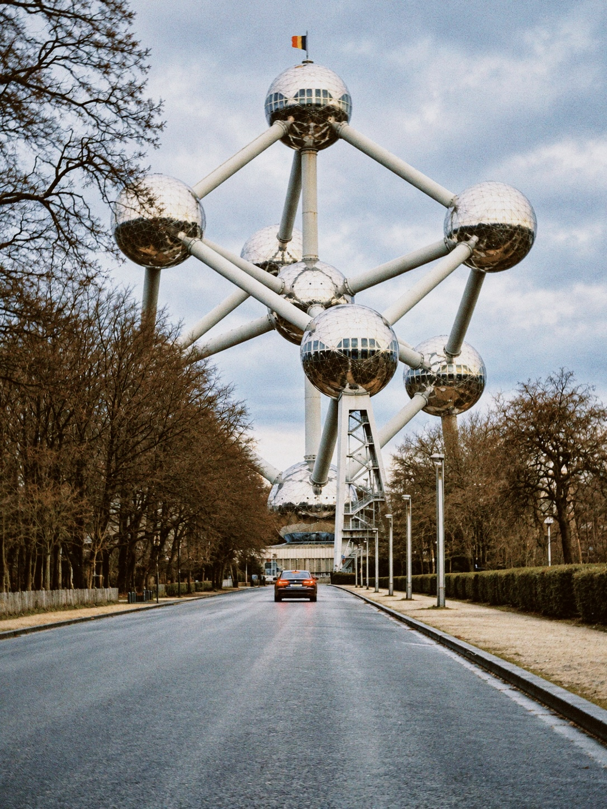

Brussels, 2024
The Atomium in Brussels rising above a tree-lined avenue, with its steel spheres reflecting the winter sky and a car on the road below.

The Atomium in Brussels rising above a tree-lined avenue, with its steel spheres reflecting the winter sky and a car on the road below.